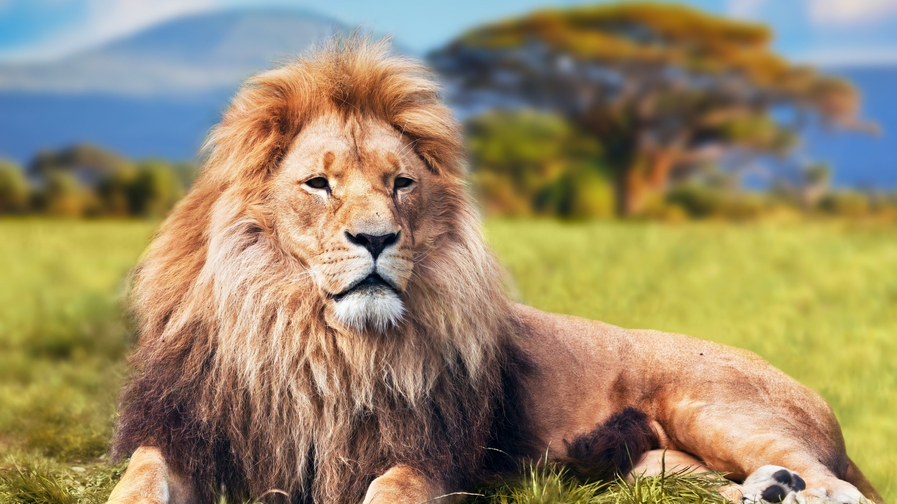
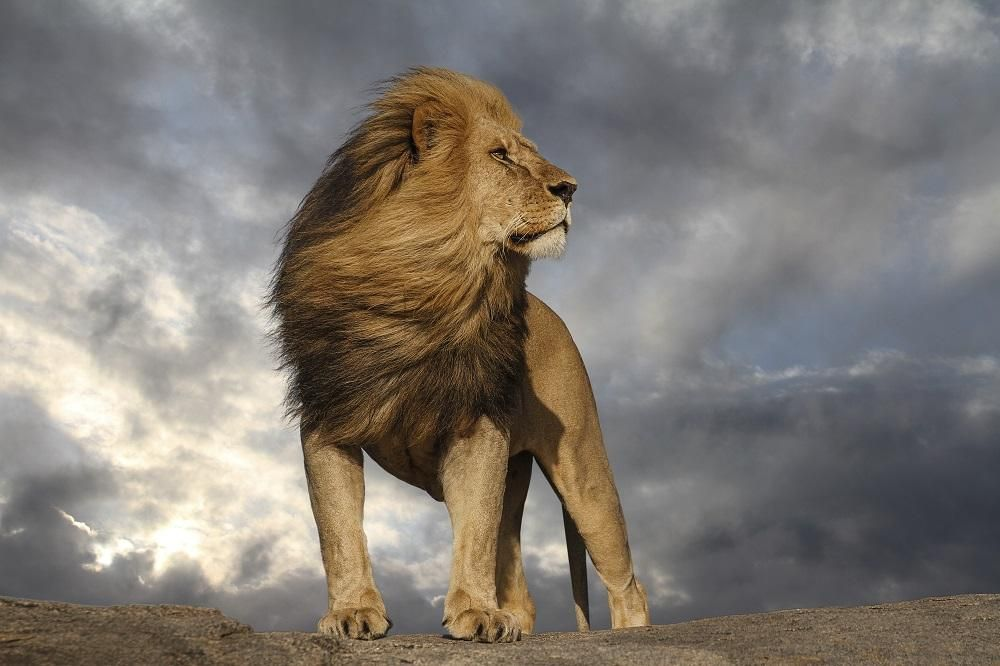

Xush kelibsiz Virtual zooparkga
Bu yerda siz turli hayvonlarni haqida qiziqarli malumotlarnitopishingiz mumkin
Bizning hayvonlar
- Arslonlar-ormon qirollari
- Fillar-yer yuzidagi eng katta quriqlik hayvoni
Hayvonlar haqida qiziqarli faktlar


Hayvonlarni korish
Hayvonlar haqida toliq malumot
| Hayvon |
Qiziqarli fakt |
| arislon |
arislonlar kunining 20 soatini uyqu bilan otkazadi |
| fil |
filar suvni ozlarini burnilari bilan ichishadi |